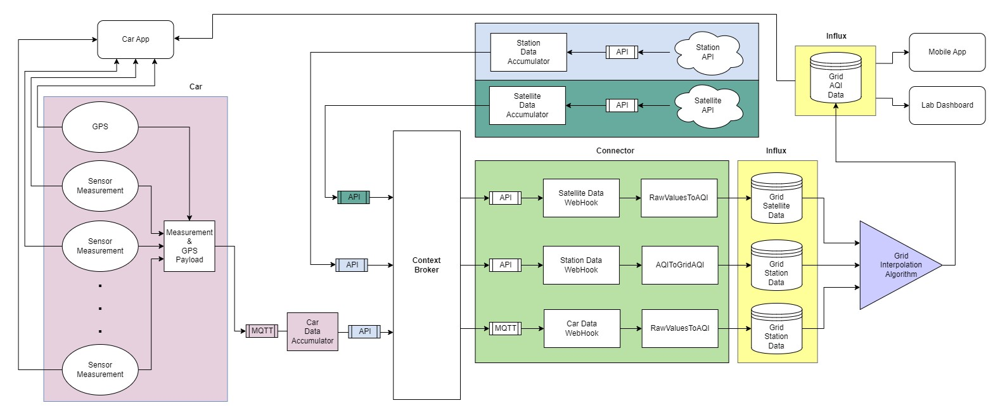
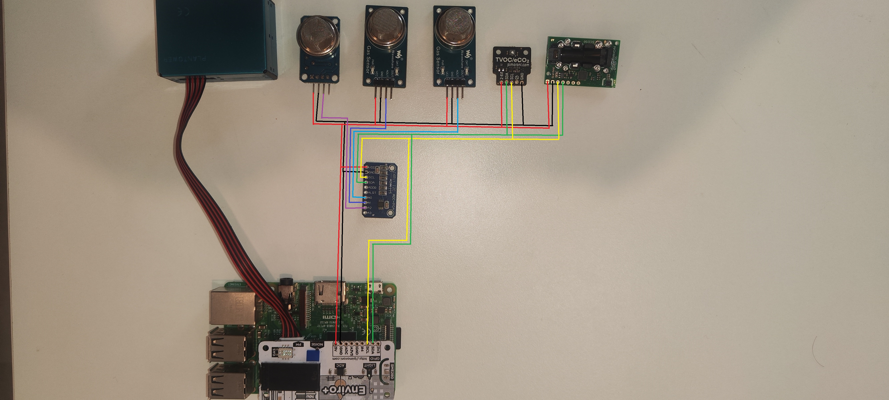

About APARS
An IoT system using vehicle-mounted sensors to monitor air quality in real-time. The system integrates GPS data and pollution levels to provide drivers with actionable insights about their environment. The key features include real-time notifications, data logging, and a mobile dashboard for visualization. This system is designed for eco-conscious drivers aiming for smart and sustainable mobility.
Project Architecture
The architecture of the APARS system is built on a combination of embedded IoT hardware and cloud-based data processing. The vehicle-mounted sensors collect air quality data, which is then processed using edge computing before being transmitted to a cloud platform via MQTT. The data is stored in a central repository, where it is analyzed and made available to users through a web and mobile interface.
Wiring Diagram
The system incorporates multiple sensors to monitor various air quality parameters. These include the MQ-2, MQ-7, and MQ-135 sensors for detecting gases like CO, CO2, and VOCs. The SCD30 and SGP30 sensors measure CO2 levels and volatile organic compounds (TVOCs). Additionally, a BME280 sensor is used to collect environmental data such as temperature, humidity, and pressure. The wiring layout connects these sensors to a Raspberry Pi, with an I2C communication protocol ensuring efficient data transfer.
